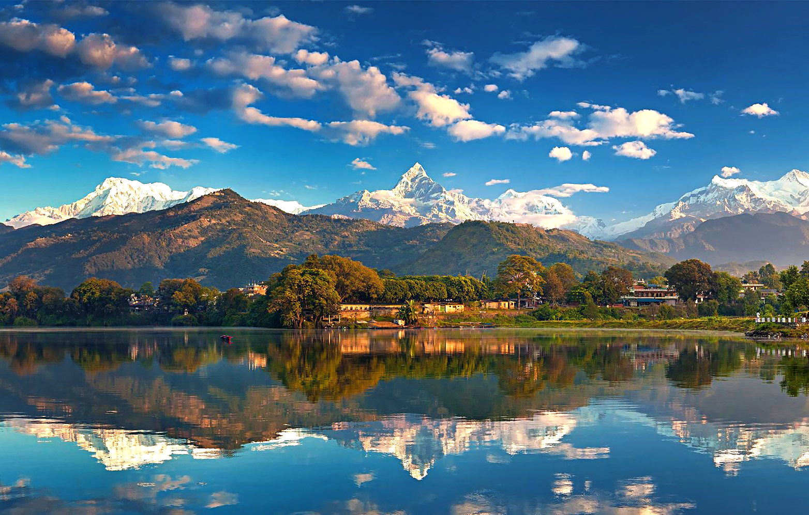

Trekker's Choice
Nepal is a land-locked country in the Indian subcontinent. It gained the stature of a nation only in the latter half of the 18th century. However, the history of this region dates back to the ages. There are references to Nepal in Indian epics, and in Buddhist and Jain scriptures. Nepal is also the birthplace of Buddha. Owing to its geographical position, the history of this country is heavily influenced by two of its neighbors India and China. Throughout the centuries this region has attracted settlers leading to the diversity of culture in Nepal. Today, Nepal attracts a lion’s share of tourists and mountaineers as well as spiritual seekers. If you are planning a Nepal trip, here are 12 destinations you must cover while visiting the country. Let’s dig into it.
1. Kathmandu
Image Source
The capital city of Kathmandu can set the tone of your Nepal tour as it will give you a glimpse into what Nepal is all about. The old building and busy streets with the scent of incense will give you an experience that no other city can. Temples, shrines and statues are the characteristics of this royal city. Durbar Square is a palace square in Kathmandu which attracts many tourists as is a UNESCO World Heritage Site.
The Hindu pilgrims flock to this city to visit the Pashupatinath Mandir which is situated on the banks of River Baramati. Kathmandu also has famous Buddhist shrines like Boudhanath and Swayambhunath. The trekkers use Kathmandu as a base for their expedition. Kathmandu is the best place to buy trekking gear. You can also enjoy Nepali street food on the streets of Kathmandu.
2. Sagarmatha National Park

Image Source
Sagarmatha brings you closer to Mt. Everest and it is one of the best places to visit in Nepal. Sagarmatha National Park is a UNESCO World Heritage
Site that serves as a conservation site of local flora and fauna. The park has endangered animal species like pheasant, snow leopard and red panda.
The national park is also home to trees like pine, oak, and rhododendrons.
The trekkers love this place as it not only has Mt. Everest but also has other peaks like Lhotse, Cho Oyu, Thamserku, Nuptse and Amadablam.
The diverse wildlife and beautiful scenery of this region also bring nature photographers to this region.
3. Pokhara
Image Source
Pokhara is the second-largest city in Nepal and is situated in the eastern region of the country. The whole city is surrounded by the peaks like Dhaulagiri, Manaslu, and Annapurna-I. This city is like no other city and allows you to spend some tranquil days. This region is also known as the “Gateway Annapurna Circuit.” Take a tour of these best places to visit in Nepal and enjoy the best of your holidays.
Lake Phewa with its blue water and scenic views of the Himalayas will give you a surreal experience. You will never forget a boat ride along this beautiful lake. Mahendra Caves and Chamere Gufa must be on your list otherwise you will miss some ecological wonders. Chamere Gufa is literally a Bat Cave but without Batman. Pokhara offers recreational activities like paragliding and river rafting. Those who love trekking and hiking will love this place.
4. Lumbini
Image Source
Lumbini is more than a simple tourist destination. This is the birthplace of Buddha and it can touch your soul with its calm environment. The lakes and monasteries add to the beauty of this place. Maya Devi Temple, an ancient structure, is built at the place where Buddha was believed to be born. This temple has a lake called Pushkarini and a park where you can spend some quiet time.
Royal Thai Monastery, Sri Lankan Monastery and Myanmar Royal Temple are other attractions in Lumbini. The World Peace Pagoda in Lumbini is significant as it reflects the four stages of Buddha’s life. The Lumbini Garden is now transformed into the Lumbini Crane Sanctuary and you will find the ruins of Siddhartha’s Tilaurakot Palace in this sanctuary.
5. Annapurna Circuit

Image source
Nepal is called the trekker’s paradise for a reason. Among numerous trekking options, Annapurna Circuit is one of the most popular trekking sites in Nepal. The whole region is surrounded by dense forests, green valleys and waterfalls. It takes almost 21 days to complete trekking the whole region.
The Ghorepani Poon Hill Panorama trek is the most popular train on this circuit. The sunrise from Poon hill and the views of Dhaulagiri, Annapurna South Machapuchare and Singa Chuli are something no hiker would like to miss. It takes about five days to reach the Annapurna Sanctuary and you can also try Muktinath Route which takes almost seven days to complete.